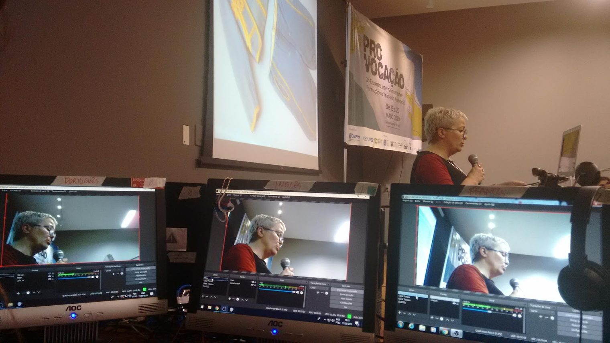

LIVE BROADCASTS
Live broadcasts of conferences, seminars and concerts, produced through COMUNAVE and my company, João Lazaro Audiovisual. Most ran on small budgets, and a large part of the job was finding creative ways around that.
3º PRO-VOCAÇÃO: Encontro Internacional sobre Formação em Teatro de Animação [3rd PRO-VOCATION: International Meeting on Training in the Arts of Puppetry], 2019
Broadcast Technician and Producer.
It was held at UDESC in Florianópolis, organised by the Professional Training Commission of UNIMA and UDESC's extension programme for professional training in theatre. It ran for six days, with presenters from more than ten countries.
The event was hybrid: an audience in the room while every session was broadcast live on YouTube. We ran three separate streams, in English, French and Spanish, each carrying the audio of the live interpreters, taken straight from their microphones.
We were a team of two, working with the university's equipment: tower computers, monitors and several webcams. There were no cameras, so we used webcams and even a laptop's built-in camera to cover the room.

Other broadcasts
I Workshop de Estratégias para Redução de Capturas Incidentais de Toninhas: Oportunidades e Desafios [1st Workshop on Strategies to Reduce Franciscana Dolphin Bycatch: Opportunities and Challenges], October 2021
Technical Director, Organiser and Technical Support.
Organised by Univille and Projeto Toninhas do Brasil, funded by FAPESC. Five days and 13 sessions on Zoom Webinar, streamed live to YouTube with simultaneous interpretation and a Brazilian Sign Language (LIBRAS) window. I also set up registration with email updates, supported the speakers, issued certificates and produced the event's audiovisual material.
V Congresso Brasileiro de Alfabetização [5th Brazilian Literacy Congress], August 2021
Broadcast Technical Director.
Three-day online congress of the Brazilian Literacy Association (ABAlf), with more than 1,000 participants, streamed live on YouTube. Watch on YouTube
VIII Colóquio Ibero-americano de Educomunicação e IX Colóquio Catarinense de Educomunicação [8th Ibero-American and 9th Santa Catarina Educommunication Colloquiums], March 2021
Technical Director, Organiser and Technical Support.
Eight days and 17 sessions (lectures, talks, debates and round tables) streamed live on YouTube for the Educom Floripa research group at UDESC, funded by FAPESC. Speakers came from Brazil, Portugal and Spain. With Isabela Rosa, Mariana Roncale and Olga Oliveira, I also ran a collaborative coverage, training a team to make videos from the sessions. Watch on YouTube
Educom.Saúde-SP, 2021 to 2022
Producer and Technical Director.
More than 50 webinars for about 700 health professionals, for a training project run by the University of São Paulo with the São Paulo State Health Department.
II Seminário Inter-Redes [2nd Inter-Networks Seminar], May 2020
Technical Director.
A month-long online seminar by PainelMar, streamed live on YouTube, funded by Fundação Grupo Boticário and Instituto Linha D'Água. Watch on YouTube
Also
2021: seminar on integral development and ethnic-racial relations for Porticus, with AfroeducAÇÃO and AFETO (Technical Director, Organiser). 2020: two online talks for GERN, the environmental law research group at the University of Brasília, on civil liability for marine damage caused by shipping and coastal ecological-economic zoning (Technical Director). 2019: live music streams from Florianópolis bars, including Irmãos Panarotto and PALAVRACANÇÃO #08 and #09 (Technical Producer).